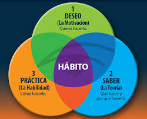
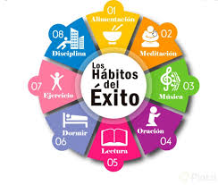
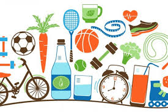

Un hábito es una conducta llevada a cabo con regularidad, es decir, repetida en el tiempo, que es aprendida –no innata– y que requiere de poco o ningún compromiso racional. Este tipo de conductas mínimas componen una importante porción de nuestro tiempo cotidiano. Pueden ser provechosas o perjudiciales para nuestra salud (en este último caso pasarían a llamarse «vicios»).
¿Que son?
Tipos de Hábitos
- Hábitos físicos: Aquellos que involucran el cuerpo y la salud, como hacer ejercicio, cepillarse los dientes luego de cada comida o tomar una copa de licor después de almorzar.
- Hábitos sociales: Aquellos que involucran la interacción con los demás, como visitar a la abuela cada domingo o llamar a un amigo en cada cumpleaños.
- Hábitos mentales: Aquellos que atañen estrictamente a la mente, como la práctica de la meditación.
- Hábitos recreativos: Aquellos que tienen que ver con la manera que tenemos de recrearnos, como jugar al fútbol los sábados por la tarde o dedicar una hora a los videojuegos luego de hacer las tareas. 
Ejemplos
Obviamente, lo que para nosotros es un hábito, para otros no lo es, dependiendo de si forman parte instalada de una rutina. Por ejemplo:
- Es un hábito ir al baño antes de dormir.
- Es un hábito cepillarse los dientes al levantarse, tanto como ir a la cocina y calentar agua para hacer café.
- Es un hábito desayunar en la cafetería de al lado del trabajo.
- Es un hábito saludar a los compañeros de oficina al llegar.
- Es un hábito fumar un cigarrillo después de almorzar.
- Es un hábito llamar a nuestra pareja al salir de la oficina.
Como se forman
Los hábitos no son naturales, sino que son conductas aprendidas e inculcadas a fuerza de repeticiones, hasta adquirir una cierta automaticidad.
Así, el conjunto de influencias que recibimos en casa, en el trabajo, en la escuela y a lo largo de nuestra vida, nos hacen adoptar ciertos hábitos en lugar de otros.
A medida que cobramos consciencia de ellos podemos aceptarlos y normalizarlos o bien sustituirlos por otros que nos resulten más convenientes o más saludables.
Vicios
Un vicio es un hábito nocivo, es decir, que resulta dañino para la salud o que entorpece la vida cotidiana de alguna manera. Existen vicios de todo tipo, algunos fomentados por sustancias adictivas o psicotrópicas, como el consumo de drogas, alcohol o de tabaco, y existen otros que poseen un origen más propio e individual.
En todo caso, los vicios son tan difíciles de romper como cualquier otro hábito, a veces incluso más, pues suele haber detrás de ellos algún procedimiento psicológico de compensación que no ha sido expuesto a la luz del día y que, por lo tanto, opera desde lo oculto de la psique.
¿Que son?
Tipos de Hábitos
Ejemplos
Como se Forman
Vicios